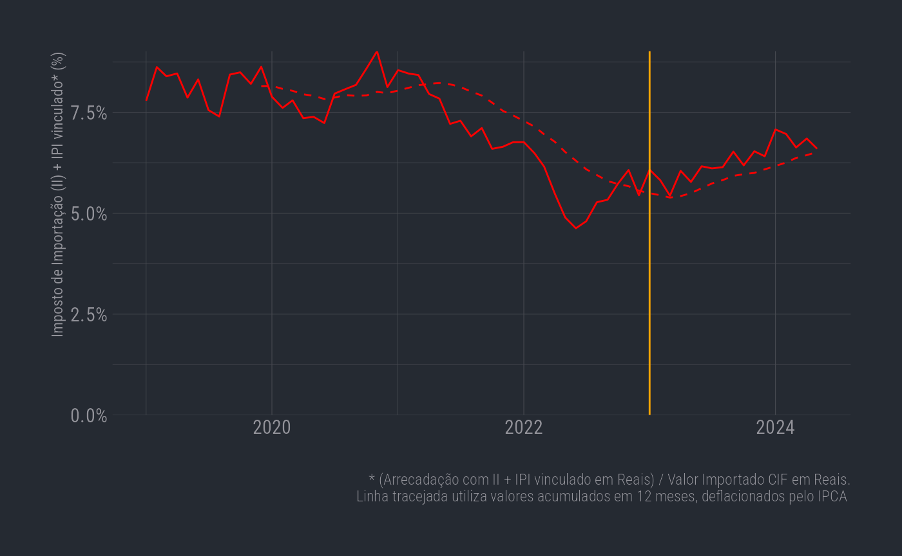

Análise da Arrecadação de Imposto de Importação (II) e IPI Vinculado sobre as Importações Brasileiras
Source:vignettes/articles/arrecadacao_ii_ipi_vinculado_e_comex.Rmd
arrecadacao_ii_ipi_vinculado_e_comex.Rmd
#devtools::install_github("leoniedu/comexr")
library(comexr)
knitr::opts_chunk$set(echo = TRUE)
library(ggplot2)
#> Warning: package 'ggplot2' was built under R version 4.3.1
library(dplyr)
#> Warning: package 'dplyr' was built under R version 4.3.1
#>
#> Attaching package: 'dplyr'
#> The following objects are masked from 'package:stats':
#>
#> filter, lag
#> The following objects are masked from 'package:base':
#>
#> intersect, setdiff, setequal, union
library(lubridate)
#> Warning: package 'lubridate' was built under R version 4.3.1
#>
#> Attaching package: 'lubridate'
#> The following objects are masked from 'package:base':
#>
#> date, intersect, setdiff, union
library(hrbrthemes)
#> Warning: package 'hrbrthemes' was built under R version 4.3.1
library(readxl)
library(tidyr)
#> Warning: package 'tidyr' was built under R version 4.3.1Este relatório visa analisar a arrecadação de Imposto de Importação (II) e IPI vinculado sobre as importações brasileiras, comparando-a com o valor total das importações. Utilizaremos dados do Comex (Comércio Exterior Brasileiro) disponíveis através do pacote R comexr, e da Receita Federal.
Preparação dos Dados
Primeiramente, carregamos as bibliotecas necessárias para a análise e visualização dos dados. Em seguida, baixamos os dados do Comex de 2019 a 2024, filtrando apenas as importações (direction = “imp”) e utilizando o tipo de classificação NCM (types = “ncm”):
if (params$download) {
comex_download(2019:2024, directions = "imp", types="ncm")
}Após o download, lemos e limpamos os dados da Receita Federal, selecionando a planilha “Tabela III” e pulando as primeiras 6 linhas. Em seguida, ajustamos os dados, criamos uma coluna de data e transformamos os dados para o formato longo, separando as categorias de arrecadação:
arrecadacao_link <- "https://www.gov.br/receitafederal/pt-br/centrais-de-conteudo/publicacoes/relatorios/arrecadacao-federal/2024-/analise-mensal-mai-2024-anexo.xlsx/@@download/file"
arrecadacao_file <- here::here(file.path("data-raw/", gsub(".*(analise.*.xlsx).*", "\\1", arrecadacao_link)))
if (!file.exists(arrecadacao_file)) download.file(arrecadacao_link, arrecadacao_file)
##obs: unidade: R$ milhões a valores correntes
drfb_0 <- readxl::read_excel(arrecadacao_file, sheet = "Tabela III", skip=6)%>%
janitor::clean_names()
meses <- tibble(mes_abrev=c("JAN", "FEV", "MAR", "ABR", "MAIO", "JUN", "JUL", "AGO", "SET",
"OUT", "NOV", "DEZ"), mes_codigo=1:12)
drfb <- drfb_0%>%
mutate(ano=c(rep(2019:2023, each=13), rep(2024, 7)))%>%
inner_join(meses, by=c("mes"="mes_abrev"))%>%
mutate(date=lubridate::make_date(ano, mes_codigo))%>%
tidyr::pivot_longer(values_to = "imposto_brl_milhoes", cols = i_renda:total_geral, names_to = "arrecadacao_categoria")%>%
mutate(imposto_brl=imposto_brl_milhoes*1e6, imposto_brl_milhoes=NULL
)Agora, vamos preparar os dados do Comex. Filtramos para o período de 2019 a 2024, agrupamos por data, e somamos os valores relevantes:
comex <- comexr::comex_ncm()%>%
filter(direction=="imp", date<="2024-05-01", date>="2019-01-01")%>%
group_by(date)%>%
comexr::comex_sum()%>%
collect()%>%
ungroupFinalmente, combinamos os dados da Receita Federal (arrecadação de II e IPI vinculado) com os dados do Comex. Em seguida, deflacionamos os valores, calculamos as médias móveis de 12 meses e a proporção do imposto em relação ao valor CIF das importações:
ii_ipi_comex <- drfb%>%
filter(arrecadacao_categoria=="i_importacao_e_ipi_vinculado")%>%
left_join(comex, by=c("date"))%>%
comex_deflate()%>%
ungroup%>%
comex_roll(x = c("qt_stat", "kg_net", "fob_", "freight_",
"insurance_", "cif_", "imposto_"))%>%
mutate(ii_prop=imposto_brl/(cif_brl),
ii_prop_12=imposto_brl_deflated_12/(cif_brl_deflated_12))Visualização da Proporção do Imposto
ggplot(data=ii_ipi_comex, aes(x=date, y=ii_prop)) +
geom_line(color="red") +
geom_line(aes(y=ii_prop_12), linetype=2, color="red") +
geom_vline(xintercept=as.Date("2023-01-01"), color="orange") +
hrbrthemes::theme_ft_rc() +
scale_y_continuous("Imposto de Importação (II) + IPI vinculado* (%)", limits=c(0,NA), expand=c(0,0), labels = scales::percent) +
labs(x="", caption = "* (Arrecadação com II + IPI vinculado em Reais) / Valor Importado CIF em Reais.\nLinha tracejada utiliza valores acumulados em 12 meses, deflacionados pelo IPCA ")
#> Warning: Removed 11 rows containing missing values or values outside the scale range
#> (`geom_line()`).
O gráfico acima mostra a evolução da proporção do Imposto de Importação (II) e IPI vinculado em relação ao valor CIF das importações ao longo do tempo. A linha vermelha sólida representa a proporção mensal, enquanto a linha tracejada vermelha representa a média móvel de 12 meses. A linha vertical indica o início do Governo Lula III, em 2023.